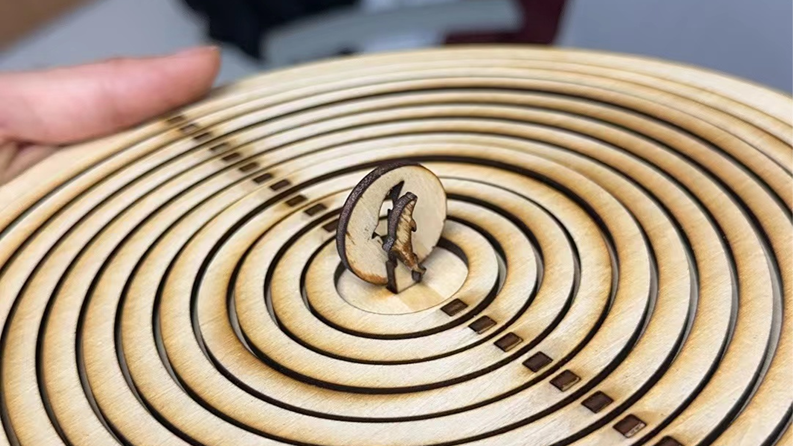

Project Introduction
Inspired by works on YouTube, we designed a mechanical structure that simulates the motion of water ripples. Using AutoCAD for modeling and a laser cutting machine for assembly, we personally crafted a cam structure to drive 12 circular rings and the central dolphin. We also designed the rotating handle and the follower of the cam pair to ensure the smooth execution of the envisioned ripple motion.
Design Challenges
The primary challenges we encountered in the design process were related to the assembly and positioning of the follower in the cam pair.
During assembly, experimentation revealed that a tight fit could be achieved when the aperture was 0.1mm smaller than the inserted shaft’s diameter. For vertical positioning without complete fixation, the maximum allowance for aperture size was 0.3mm, as exceeding this would lead to significant oscillation.
Regarding positioning, the 3mm thickness of the plywood we procured posed an issue when directly used for crafting the cam and follower. Friction caused them to misalign, even leading to the follower detaching from the cam. To address this, we fused two identical cams together and designed a base for the follower. Additionally, we implemented two lateral constraints for the follower to prevent any lateral movement, ensuring stability during operation.
About this Post
This post is written by Jason, licensed under undefined.